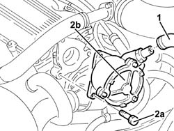
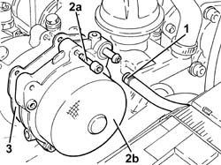
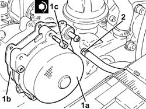

3330D30 vacuum pump - r+r
- Path
- Procedures > 33 BRAKING SYSTEM > 3330 HYDRAULIC BRAKING SYSTEM > 3330D brake vacuum system > 3330D30 vacuum pump - r+r
- Kind
- repair procedure (removal / refitting; the operation number is the code)
- Applies to
- engines: 1.9 JTD 8v , 1.9 JTD 16v, 2.4 JTD 10v; all production periods
- Interactive page
- https://sloeber94.github.io/elrnDB-a156/en/#/3238081
Applies to: engines: 1.9 JTD 8v , 2.4 JTD 10v; all production periods
 Removing
Removing
 Refitting
Refitting1. Disconnect the vacuum pipe from the vacuum unit.
2. Undo the bolts (2a) and remove the vacuum unit (2b) complete with O-ring.

Applies to: engines: 1.9 JTD 8v , 2.4 JTD 10v; all production periods
Refitting
RemovingFit the complete vacuum unit complete with a new O-ring and tighten the bolts to torque.
 | Fastening | Component | Ø | Value (daNm) |
|---|---|---|---|---|
- | Connector | PIPE FROM PUMP TO HYDRAULIC CONTROL UNIT | M10 | 1.3 - 1.5 |
Connect the vacuum pipe to the vacuum unit.
Applies to: engines: 1.9 JTD 16v; all production periods
Removing
RefittingProceed with removal 1016A10 sound-proofing cover - r + r .
1. Loosen the band and disconnect the vacuum pipe from the vacuum pump.
2. Undo the bolts (2a) and remove the vacuum unit (2b).
3. Remove the gasket.

Applies to: engines: 1.9 JTD 16v; all production periods
Refitting
Removing1. Place the vacuum unit (1a), complete with gasket (1b), back in its housing and secure it tightening the bolts (1c) to the recommended torque.
| Fastening | Component | Ø | Value (daNm) |
|---|---|---|---|---|
1c | Bolt | BRAKE SERVO VACUUM PUMP | M6 | (Cylinder head side 05 06 50 |
2. Connect the vacuum intake pipe to the vacuum unit and tighten the band.

Applies to: engines: 1.9 JTD 16v; all production periods
Proceed with refitting 1016A10 sound-proofing cover - r + r .